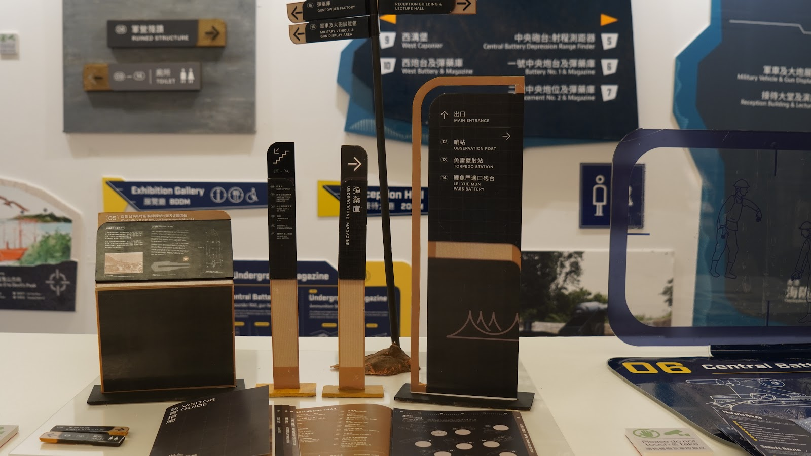
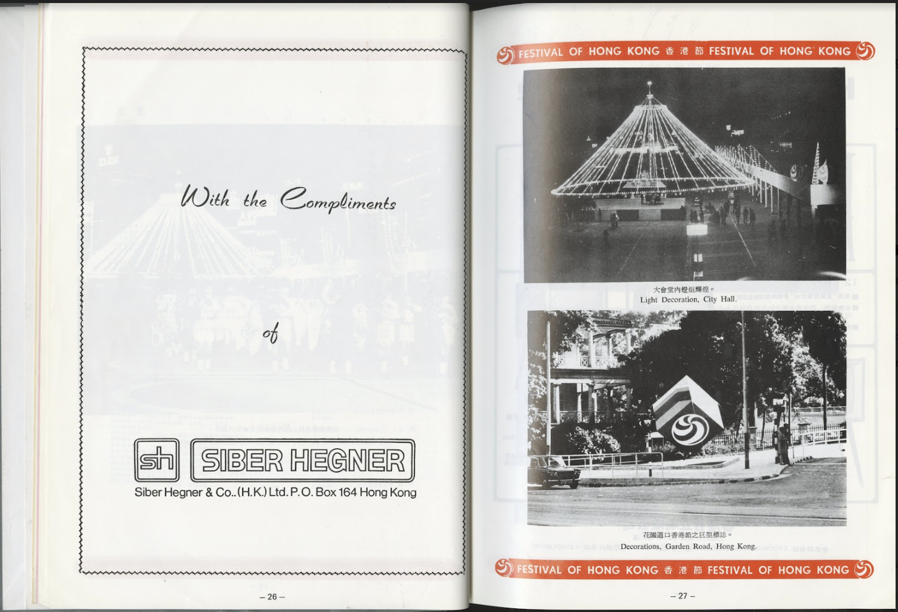

MA Studio 1: Competition 2025 Developing Two Competition Projects Through the Lens of User Experience and Creative Coding The teaching methodology is structured around a dual-track engagement with high-stakes industry briefs. This primarily happens through the iF Design and D&AD competitions. The curriculum is divided into two tracks: a user-experience focus for iF Design, and a creative-coding-driven output for D&AD. Students are required to address the intersection of human-centred empathy and generative technology. Support is delivered through a structured cycle. This cycle includes independent practice, peer critique, and iterative testing. Students utilise interaction design methods to address complex real-world problems that do not have single solutions. For example, in one classroom activity, students begin by forming small design teams to interpret an iF Design brief. They conduct field-based participatory user research and then collaboratively map user journeys. In another assignment, designed for the D&AD track, students prototype interactive installations using generative coding tools. They present their work-in-progress for peer feedback and document insights from an industry mentor session for further iteration. The methodology is grounded in participatory research and critical inquiry. Journal articles and industry interviews support this process. The course balances technical experimentation with critical reflection on the broader impact of design on culture, community, and the environment. This approach positions the classroom as a live laboratory. It cultivates the versatility and professional maturity necessary for impactful solutions to global challenges.
MA Studio 2: Condensed Narrative Project 2024 We live in an age of hyper content, in which complex narratives and storylines are compressed into mere moments for social media. Your brief is to compress your favourite book, film, play or videogame into a 15 second piece.You cannot use any of the original content. How can you communicate the book, film, play or videogame without its words, images, sounds, etc ?You could try to convey its emotions, or narrative arc or rhythms, for example — we want you to explore unique ways to retell the story.Can you bring the story to life using abstraction, reinterpretation,and symbolism in 15 seconds ? You should explore experimental approaches, pushing your creative and technical limits.
Designing a graphic information system for Art Museum of the Chinese University of Hong Kong Messages delivered in public spaces settings like museums, zoos and shopping malls require the voluntary cooperation of potential "receivers" while they are surrounded by distractions and choices. Visitors do not have to pay attention but are free to attend, ignore, or distort the messages being communicated. In such situations, it is immensely important to design information systems that not only reflect the needs and characteristics of audiences but also attract and hold their attention (Screven 1990). During the summer holidays, we contacted the Chinese University of Hong Kong and learned that they would be updating their orientation system. As the different structures were built in different eras, the Art Museum of the Chinese University of Hong Kong is looking for proposals to update the orientation system.All participants receive theoretical knowledge and simulation experiences over a period of four weeks. During this phase participants will have the opportunity to apply your knowledge of user-centred research to the environment. User research and user testing will be key elements of this phase, where all participants will be required to submit documentation of user testing and a different set of way finding prototypes.

Capstone
The undergraduate capstone project is a year-long independent project which allows you top put academic learning into practice.Specifically, this project involves selecting a communication design related problem or issue and in some cases, a concept and exploring the optimal means, techniques, and strategies to address it.
Packaging & Production TechnologiesInteractive The subject is divided into two parts, weeks 1-7 students will learn in depth about print production and use visualisation tools to present their concepts, after week 7 students will be required to discuss with staff from the print company and they will also be required to handle the art direction of their concepts in a studio photography workshop. Finally, they will be exhibiting their packaging designs in the Materials Resource Centre.
Multiplatform Publishing Design a print, web and digital platform for multi-platform or cross-platform publishing. Consider this is a redesign of Newspaper, Textbook, Children storybook, Travel Guide, Novel.....that already has print media and has the potential to develop the web and digital platforms for future publishing.Research on the existing printed publication and selectively copy their text content such as chapter, foreword etc. Consider the information architecture, visual consistency, device optimised layout and context-specific features of the print and web platforms.
Art direction In this subject students will observe, critique, and analyse case studies of art direction for a variety of media so that they can develop a personal vision and approach for directing their communication design projects. The subject will not be medium specific; students will learn art direction for a broad spectrum of contexts and media including books, television, film, newspapers, advertisements, theatre, music videos, motion graphics, online visuals, fashion, music albums, packaging, exhibitions, etc.The subject is divided into two parts, in the first part students will work in teams to take part in the D&AD Challenge. After the competition, students will develop their own practice based on their design history as an independent.
D&AD Competition - Hellmann ProjectLicking is the core concept that promotes this brand. If a person likes and cherishes food, he will eat all the food on his plate or fingers, including the sauce. Licking is therefore an important. Licking is therefore an important action to combat food waste.
Web Design This subject introduces students to basic principles of interactivity through a human-centered perspective.Students will acquire basic conceptual understandings in the components and dimensions of interactivity, develop an appreciation for users, contexts and their needs, as well as develop the vocabulary and skills necessary to conceive and shape a desired communication experience. Students will also learn to present and communicate interactivity design through scenarios and narratives.In the current context where technology has become intrinsic and pervasive in everyday life, students will also acquire practical skills in crafting user experiences that are delivered through different technology platforms.
User Experience The UX project is a group from a final year project and their design research is slightly different from other projects. User testing and iterative design are embedded into their design process.
DODIDDONE by Ray Procrastination happened in every day, every time, even every second in our daily life. Harriott and Ferrari (1996) found procrastination to be a prevalent behaviour among students and adults, hampering their ability to successfully complete tasks on time. Elizabeth & Anthony (2006) mentioned that graduate school is, by its very nature, a stressful environment, with both the quality and quantity of tasks to be accomplished contributing to the fear of failure that marks many students’ tendencies to procrastinate.
Cat volunteers by Mak Yi Ting Melissa The design is hoped to be cross platform design. The users’ role will evolve through level of experience changing and during each stage. They would require different kinds of deliverables to meet certain targets.User case studies in anatomy flowchart in different service mobile applications were done in capstone 1 , as it was one proposed deliverable when the project was still focusing on how cat’s volunteers perform their daily tasks and pattern on how they communicate.The website will include pages of each activities which introduce how it run and people can participate the activities in pages.Also, it will include a page call " 區 區 有 貓 ", user can directly click specific location on map to review the fedral cats' infomration around them and visit their location. Also they can posted photos they found satified to share in the webpage to involve a invisible interaction.

Stick with me by To A world-wide survey from OECD held in 2015, interviewed youngsters in over 40 developed countries about their life satisfaction, revealed Hong Kong teenagers are the third last. Besides, There is a survey about well-being of Hong Kong teenagers held by Hong Kong Christian Service (HKCS) in 2018, it indicates that almost 40% of the interviewee feel not happy with their life. It signifies that the sense of well-being of Hong Kong teenagers is very low compared to other countries.
App - Social media app is another main focus in this project, as it used to assist with the journal to carry out some of the objectives. Besides of the basic social platform to share users’ journals, make friends, likes and comments or the list go on, there will also be some specialised functions included in the app. Firstly, a video auto generator is provided for the users to record their journaling process, as that is the most soothing event. With the sticker tearing or even the writing sound, it is stress-relieving to watch.Secondly, ‘a quote of the day’ and ‘emotion summary’ are allocated for each journal. With the use of stickers, it can generate the emotion summary of the day. Based on that, a quote of the day will be allocated to it, in order to inspire or encourage them.Thirdly, the app can link you with users around the world who share similar journals with you. With such common ground, users who are connected can have sharing based on their journal content and potentially be friends.
Emotion Stickers - What emotions? So as to wholly covering all the emotions in the stickers, it is fundamental to understand the feelings and emotions. I have referred to the emotion wheel from Abby Vanmuijen. There are a total six main emotions and along with related emotions respectively.What sticker? In order to maintain the consistency of the sticker design, I decided create a main character for each emotion and develop other related stickers. These related stickers include some quotes and objects. On the other hand, some pattern and plain colour stickers will also be provided, so as to provide them enough materials to create different combinations and their own unique journal.What sticker format? Stickers can have many different forms, such as a roll, die cut individually or on a piece. The character and the related sticker will present in an individual die cut format, instead of on a piece. As without grouping them on a piece, it can avoid limiting the choice of the sticker for the users.Besides, the pattern sticker will present as a sticker sheet, as it gives full scope to creativity for the users, they can cut it with scissors or tear it by hand as they wish. Plain colour sticker tape, furthermore, will be provided in the journal kit for other uses, such as neutralising the journal layout with other stickers, attaching users’ stuff (e.g. photos, tickets) on the journal or writing note on it.
Packaging - In order to make the journal handy, all the material, like stickers and stationary, will be stored in one package. Therefore whenever they want to make their journey, they can open the box.Besides the basic materials, there will be a journal collection box in the packaging, users can put the journal inside after they finish journaling and recording. It is an individual box. So after the whole year, they can take it out and store it as they wish.Apart from that, there is a video auto generator as mentioned,so the packaging will have an extension phone stand for the user to put their phone on it and record the journaling process. As well as the lid of the packaging will be the working table for journaling.
Redesign from MiTVHigher Diploma in Multimedia Design and Technology (discontinue in 2019 )
Day To-Dayby Tsui Pansy
In Hong Kong, no matter whether students or adults encounter lots of workload each day, it is not uncommon that our schedule is crammed with different tasks. According to the world happiness index, Hong Kong only ranked at 77 and scored 5.477 out of 10, which shows that most of the Hong Kong citizens do not feel delighted about their lives in recent years.After dealing with this kind of pressure each day, I would always have a thought pop up in my mind: " everyday is tedious and repeated in my life.” Personally, it is hard for me to find motivation towards everyday life because I do not find life interesting, everyday is the same from my view.My hypothesis is that such kind of repetitive and busy schedule does not create much freshness in our life, which is making our life living in a dull and repeated schedule, which is easy to lead to negative emotion, therefore adding some little spark moments to add some details in life could enhance the entertainment and satisfaction in life.Sin & Lyubomirsky (2009) suggested that some simple cognitive and behavioral activities which people can apply in daily life have been found to foster happiness. Therefore, the method and advantage of practicing a sense of ritual would be emphasized and explored in my capstone project, and attempt to find out the positive relationship between well-being or sense of ritual to enhance people's happiness of life.
Practicing behaviour related to sense of ritual is a kind of lifestyle that is gradually on the rise, especially among adolescents. People would adopt simple action which is different from their daily routines like cooking a plentiful breakfast to create freshness in their life, or doing something unique with friends to create a feeling of ‘ritual’. In this project, application design will be the main element to support people to build up their personal routines, as application is an indispensable part in our daily life, which is easily accessible and convenient for use. Also, more function could be included and the daily activities could be tracked through the mobile app.Besides the application, some of the daily objects would also be included in such project, it works as a little side product to participate in user’s daily life, to practice daily rituals with users together to strengthen the user experience tangibly.
A packaging belt is designed for each of the daily object, like the cultery or larger items. A belt with pattern will be wrapped on the product packaging to represent the brand identity, and it will be utilised in different size of packaging. The pattern are mainly some daily object related to people’s impression about sense of ritual, such as hand-made stuff, flowers or coffee such common items in daily live. There wouldbe a QR code included for user to scan and suggest them to download the application, and encourage them to use such daily object to practice the rituals together